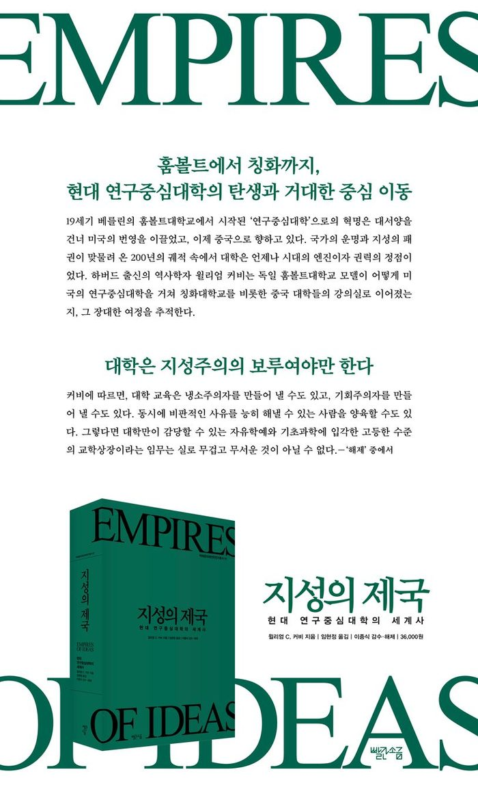

저자 윌리엄 C. 커비 지음, 임현정 옮김출판사 빨간소금발간일 2026-02-25

책소개
훔볼트에서 칭화까지, 현대 연구중심대학의 탄생과 거대한 중심 이동
대학은 지성주의의 보루여야만 한다
오늘날 우리는 전 세계 어디에나 대학이 존재하는 ‘대학의 시대’에 살고 있다. 우리가 당연하게 여기는 현대 연구중심대학의 모델은 어디에서 시작되었으며, 과연 어디로 향하고 있는가? 하버드대학교 교수이자 저명한 역사학자인 저자 윌리엄 커비는 이 질문에 답하기 위해 19세기 독일에서 시작되어 20세기 미국을 거쳐 21세기 중국으로 이어지는 대학의 거대한 여정을 추적한다. 커비는 베를린대학교가 정립한 학문 탐구와 전인교육의 가치가 어떻게 세계적인 표준이 되었는지 분석한다. 나아가 하버드와 버클리 등 미국 명문대들이 직면한 위기와 도전, 그리고 문화대혁명의 폐허를 딛고 “세계적 수준의 대학”으로 부상하고 있는 중국 대학들의 역동적인 현장을 생생하게 보여준다. 이 책을 읽으면, 세계의 주도권과 밀접하게 연결된 지식 패권의 향방을 가늠할 수 있다.
이 책은 단순히 대학의 연대기를 나열하는 역사서가 아니다. 하버드경영대학원의 사례연구법을 도입해 각 대학이 직면한 실천적 문제들을 심층적으로 파고든다. 100여 명에 달하는 핵심 인물들의 솔직한 인터뷰를 통해 대학의 성공과 쇠퇴를 결정짓는 리더십, 거버넌스, 재정적 역량의 실체를 드러낸다. 이를 통해 대학은 당장 수요가 없는 지식이라도 그 자체를 목적으로 추구할 수 있는 유일한 공간임을 강조하며, 21세기 대학이 나아가야 할 방향을 제시한다. 지식의 최전선에서 고군분투하는 대학의 과거와 현재를 통해 미래를 조망하고 싶은 독자들에게, 이 책은 대학이라는 ‘지성의 제국’이 나아가야 할 길을 알려주는 가장 정교하고 방대한 안내서가 될 것이다.
저자소개
윌리엄 C. 커비 (글)
하버드대학교 경영대학원 스팽글러 패밀리 경영학 교수(Spangler Family Professor of Business Administration) 겸 사학과 T. M. 창 중국학 교수(T. M. Chang Professor of China Studies)다. 하버드차이나펀드(Harvard China Fund)의 의장 및 하버드상하이센터의 학술의장(Faculty Chair)을 맡고 있다. 하버드대학교 문리과대학(Faculty of Arts and Sciences) 학장을 역임했다. 《중국은 세계를 이끌 수 있는가?(Can China Lead?)》를 포함한 다수의 저서를 출간했다.
임현정 (번역)
서강대학교에서 철학과 경제학을 공부한 후 회사원으로 일하다가 늦깎이로 번역에 입문했다. 《허랜드》 등 ‘페미니스트 유토피아 3부작’, 《누런 벽지》, 《폭주하는 알고리즘》, 《생각을 깨우는 철학》 등을 우리말로 옮겼다.
목차
책을 펴내며
서론 “세계적 수준”의 대학
제1장 독일의 대학 : 역사적 개관
제2장 근대의 원형 : 베를린대학교
제3장 냉전 세계에서의 진실, 정의, 자유 : 베를린자유대학교
제4장 미국 연구중심대학의 부상과 도전
제5장 변화와 폭풍을 헤치며 성장하다 : 하버드대학교
제6장 공적 사명, 사적 자금 : 캘리포니아대학교 버클리
제7장 대담한 야망 : 듀크대학교
제8장 중국의 세기? : 중국 대학의 부흥과 부상
제9장 예비학교에서 국가의 명문 대학으로 : 칭화대학
제10장 역사의 짐 : 난징대학
제11장 아시아의 글로벌 대학? : 홍콩대학
결론 교훈과 전망
해제
찾아보기
추천평
닐 L. 루든스타인 (하버드대학교 명예총장)
윌리엄 커비의 신작은 독보적입니다. 고등교육에 관해 이토록 폭넓은 시야와 범위, 그리고 순수한 비교 분석을 보여주는 책을 본 적이 없습니다. 그는 근대 대학의 부상과 진화를 추적하며 각 모델의 강점과 약점을 명확히 밝혀냈습니다. 지난 200년 동안 대학의 본질에 관심을 가졌던 이들이라면 반드시 읽어 봐야 할 책입니다.
첸잉이 (칭화대학 경제관리학원 명예원장)
이 주제와 관련해 커비의 해박한 지식을 따라올 사람은 없습니다. 그의 통찰은 우리를 대학 순위의 이면과 그 너머의 세계로 안내합니다. 대단히 매혹적이고 설득력 있는 책입니다.
리처드 브로드헤드 (듀크대학교 명예총장)
대학을 아끼는 모든 이들을 위한 필독서입니다. 주요 현대 기관을 정의하는 ‘내구성과 취약성의 낯선 조화’에 관해 시사하는 바가 큰 교훈적인 책입니다.
맬컴 그랜트 경 (요크대학교 총장)
이 탁월하고 흡인력 있는 책은 방대한 학술적 성취인 동시에, 글로벌 경쟁이 깊어지는 환경에서 대학들이 나아갈 미래를 보여주는 필수적인 가이드입니다. 글로벌 현상으로서 고등교육과 연구의 미래에 관심이 있는 이들이라면 반드시 읽어야 합니다.
클라우스 뮐한 (체펠린대학교 총장)
글로벌 고등교육 분야의 세계적인 역사학자가 집필한 이 시의적절하고 중요한 책은 고도로 경쟁적인 글로벌 대학 환경에서 혁신과 창의성의 중심이 끊임없이 이동하고 있음을 설득력 있게 보여줍니다. 중국 대학들의 성장은 서구만이 혁신에 적합하다는 고정관념을 타파합니다. 반드시 읽어야 할 책입니다!
예원신 (캘리포니아대학교 버클리 교수)
《지성의 제국》은 대학이 탁월함을 달성하는 실질적인 방법뿐 아니라, 권력과 학문 사이의 관계에 대해서도 깊은 통찰을 제공합니다. 이 책은 주 정부가 교육 예산을 지속적으로 삭감하는 상황에 놓인 미국 공립대학의 전망과 유럽 및 중국의 대학들과 경쟁해야 하는 미국의 역량에 대해 심오한 질문을 던집니다. 학술적 거버넌스의 정수를 보여주는 역작입니다.
필립 G. 알트바흐 (보스턴칼리지 국제고등교육센터)
세 주요 국가에 있는 현대 연구중심대학들에 관한 생생하고 통찰력 있는 분석입니다. 저자 윌리엄 커비는 각국에서의 개인적인 경험과 학술적 전문성, 그리고 분석적 틀을 갖춘 완벽한 적임자입니다. 《지성의 제국》은 연구중심대학의 기원과 현대적 과제에 대해 더없이 훌륭한 관점을 제공합니다.
